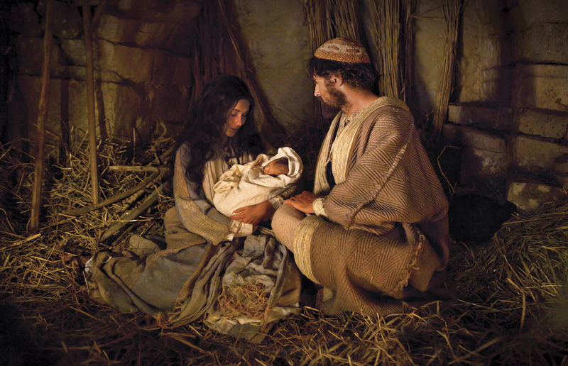

December 25, 2022
Merry Christmas

- Presiding: Bishop Crhistian Saez
- Conducting: Brother Todd Palmer
- Opening Hymn: #207 It Came Upon the Midnight Clear
- Opening Prayer: Brother Casey Jones
- Ward Business
- Sacrament Hymn: #193 I Stand All Amazed
- Administration of the Sacrament
- Primary Children Musical Number - Picture a Christmas
- Youth Speaker: Jaida Lynn Luke 2:8-10 Christ Brings Joy
- Congregational Hymn - Joy To The World
- Speaker Chad Winn Matthew 2:1 & 10 Christ Makes Us Rejoice
- Choir: Christmas Bells
- Speaker: Sarah Horton 3 Nephi 1:13-14 Christ helps us be of good cheer
- Choir: A New Star Shines Tonight
- Speaker Blake Solomon Isaiah 9:6 Testimony - Christ Brings Peace
- Solo - Katie Steele Silent Night
- Closing Hymn: #213 The First Noel
- Closing Prayer: Sister Ann Baker